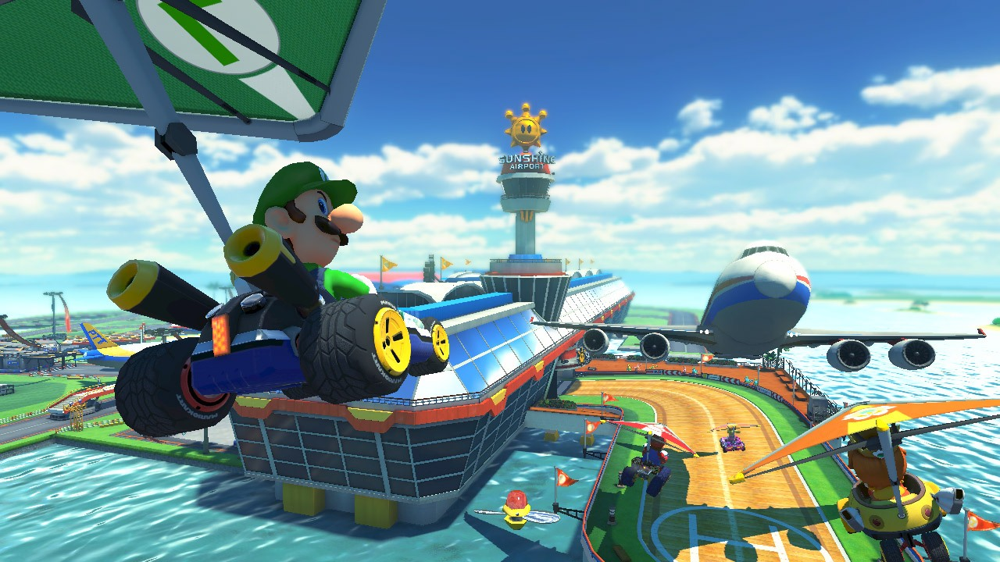

Mario Kart 8 lleva las locas carreras de Nintendo a Wii U. Mario, Luigi, Bowser y compañía vuelven a ponerse al volante de varios bólidos con características propias, ¡esta vez jugando con la gravedad! Arriba, abajo… ¡nada importa en este videojuego!, en el que tan pronto compites sobre una pista de asfalto, como lo haces recorriendo las paredes de un gran castillo o ejecutando saltos imposibles en mitad de un aeropuerto.
El videojuego de la Gran N conserva los ítems clásicos de esta serie, como los caparazones rojos y verdes, la estrella, o los champiñones para coger impulso, y añade otros novedosos como la bocina, capaz de frenar incluso la envestida del temible caparazón azul, o la planta carnívora, que se lanzará a morder a todo aquel que se cruce en nuestro camino. Mario Kart 8 no se olvida tampoco del multijugador con las carreras hasta para 12 personas online.
Plataforma: Wii
Año: 2014
Idioma: Multi-Español
Género: Conducción
Peso: 3,63 GB
¡Corre con Mario y sus amigos donde quieras y cuando quieras!
¡Descubre lo nuevo de Mario Kart™ 8 Deluxe y juega con nuevos personajes como Inkling chica e Inkling chico! Podrás elegir sus karts inspirados en el juego Splatoon en Parque Viaducto para el modo batalla.
Calienta motores y prepárate para la versión definitiva de Mario Kart 8.
